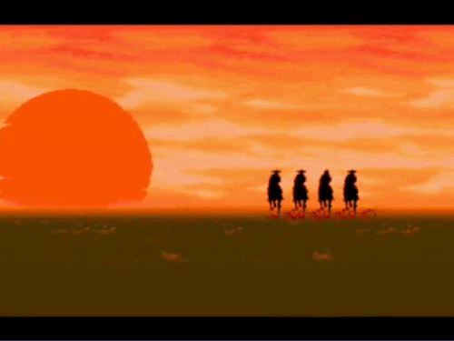

Fim
Você cumpriu sua missão, é hora de ir até a cidade mais próxima e reclamar sua recompensa.
Encontre seus amigos e sigam caminho até derrotar Sir Richard Rose.

Você cumpriu sua missão, é hora de ir até a cidade mais próxima e reclamar sua recompensa.
Encontre seus amigos e sigam caminho até derrotar Sir Richard Rose.